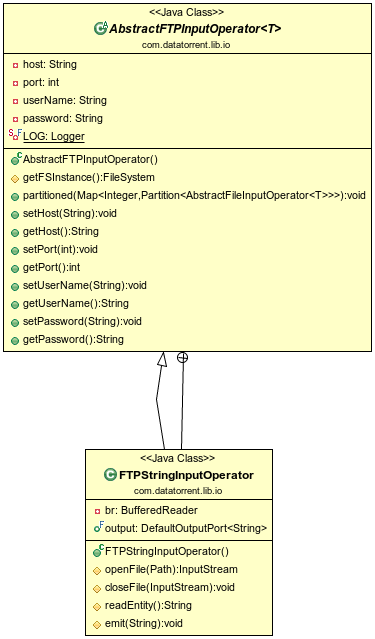

FTP Input Operator
Operator Objective
This operator(AbstractFTPInputOperator) is designed to scan a directory from an FTP server for files, read
and split file content into tuples such as lines or blocks of bytes, and finally
emit them on the output port for further processing by downstream operators.
The operator extends the AbstractFileInputOperator. It overrides the
getFSInstance() method and returns an instance of the FTPFileSystem
(org.apache.hadoop.fs.ftp.FTPFileSystem)
Class Diagram

Operator Information
- Operator location : malhar-lib
- Available since : 2.0.0
- Java Package : com.datatorrent.lib.io
Ports
Because this is an input operator, there are no input ports.
| Port | Description | Type | Mandatory |
|---|---|---|---|
| output | output port on which data is emitted | String | Yes |
Configuration
| Property | Description | Type | Mandatory | Default Value |
|---|---|---|---|---|
| host | the hostname of the FTP Server | String | Yes | N/A |
| source | the directory path from where to scan and read files | String | Yes | N/A |
| username | the username for authenticating against the FTP server. This is an optional property and can be skipped when anonymous FTP is enabled | String | Yes | N/A |
| password | the password to be used in conjunction with the above username | String | Yes | N/A |
Partitioning
Static Partitioning
Configure parameter partitionCount to define the desired number of initial partitions
(4 in this example).
<property>
<name>dt.operator.{OperatorName}.prop.partitionCount</name>
<value>4</value>
</property>
Alternatively, this can be changed in the application code by setting the operator property partitionCount to the desired number of partitions:
FTPStringInputOperator reader = dag.addOperator("Reader", new FTPStringInputOperator());
reader.setPartitionCount(4);
Dynamic Partitioning
Dynamic partitioning -- changing the number of partitions of one or more operators
in a running application -- can be achieved in multiple ways:
- Use the command line tool apex or the UI console to change the value of the
partitionCount property of the running operator. This change is detected in
processStats() (which is invoked periodically by the platform) where, if the
current partition count (currentPartitions) and the desired partition count
(partitionCount) differ, the repartitionRequired flag in the response is set.
This causes the platform to invoke definePartitions() to create a new set of
partitions with the desired count.
- Override processStats() and within it, based on the statistics in the
incoming parameter or any other factors, define a new desired value of
partitionCount and finally, if this value differs from the current partition
count, set the repartitionRequired flag in the response.
Example application
An example application for the FTP input operator can be found at https://github.com/apache/apex-malhar/tree/master/examples/ftp